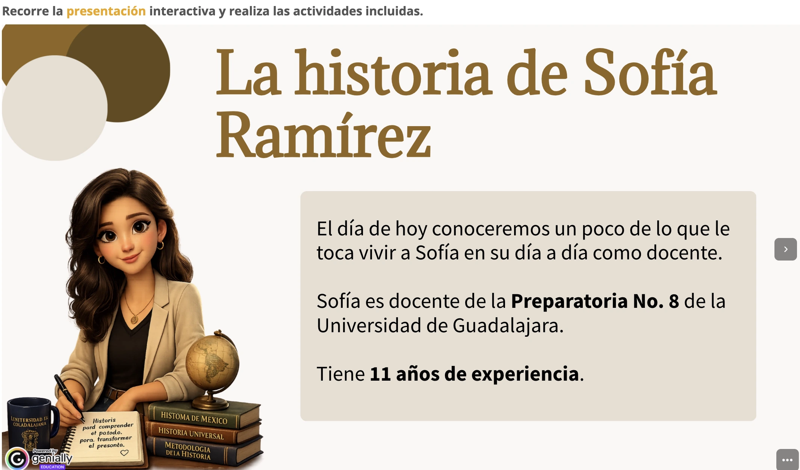
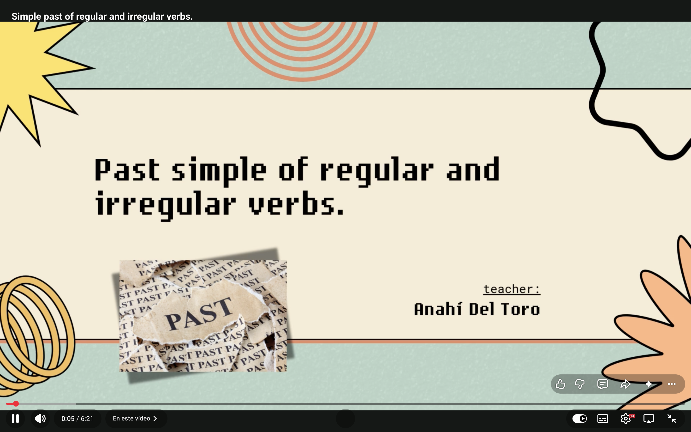
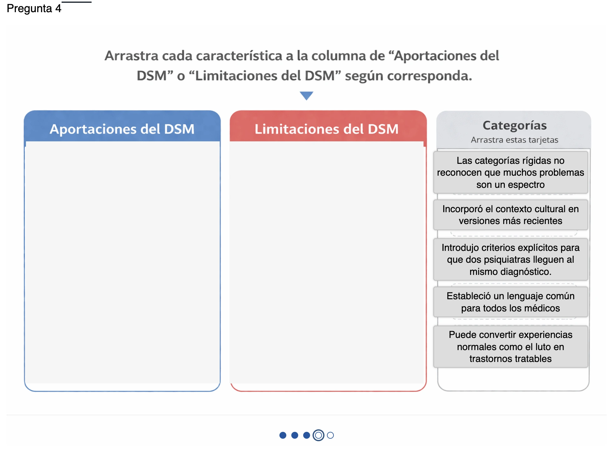

Laboratorio
Recursos para explorar cómo se diseña el aprendizaje.
Diez experiencias interactivas organizadas en tres colecciones. Cada recurso muestra no solo el resultado final, sino también el problema educativo, las decisiones de diseño y los aprendizajes obtenidos durante su creación.
Colección 01 · Formación docente
Comprender antes de enseñar.

24 horas en la vida de un adolescente
Una experiencia de investigación guiada para reconstruir el contexto cotidiano de un estudiante antes de decidir cómo acompañarlo.

El cerebro adolescente
Una presentación interactiva para reinterpretar decisiones, emociones y conductas desde la neuroeducación.

Tangram colaborativo
Una dinámica vivencial para experimentar las dificultades de comunicar y colaborar bajo condiciones de incertidumbre.

¿Qué significa colaborar hoy?
Una presentación para problematizar el trabajo en equipo y reconocer qué condiciones hacen posible una colaboración auténtica.
Colección 02 · Lengua Extranjera
Aprender un idioma viviendo el idioma.

Simple Past: Regular and Irregular Verbs
Un video educativo para introducir el pasado simple y liberar tiempo de aula para practicar con acompañamiento.

Be going to practice
Una actividad de práctica guiada para utilizar la estructura al hablar de planes, decisiones e intenciones futuras.

Ruleta diagnóstica
Una experiencia gamificada para explorar conocimientos previos y seguridad al utilizar el inglés sin recurrir a un examen rígido.
Colección 03 · CSTM
Pensar antes de clasificar.

DSM-5 desde cero
Una guía audiovisual para comprender la estructura del manual y aprender a localizar información antes de analizar casos.

La historia de la psiquiatría
Un recorrido para comprender cómo han cambiado las formas de definir, clasificar y diagnosticar la salud mental.

Test sobre la historia de la psiquiatría
Una evaluación formativa con retroalimentación inmediata para revisar relaciones históricas y consolidar la comprensión.
El hilo que conecta todo
La herramienta cambia. El propósito permanece.
Genially, HTML, Canva, YouTube y H5P aparecen aquí como medios, no como punto de partida. Cada recurso comenzó con una pregunta sobre las personas, el contexto y aquello que necesitaban comprender, practicar o transformar.